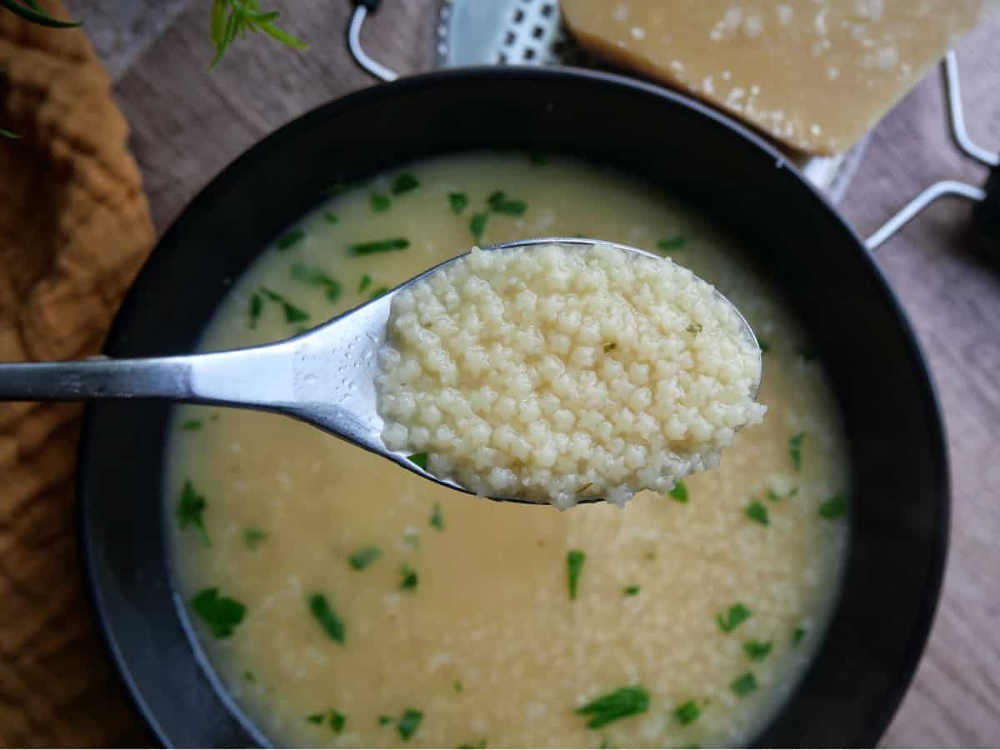

Chicken Pastina

Description
It’s never too late to have a happy childhood, and if that alternative childhood you’re working on includes eating comfort foods cooked by an Italian Nonna, then this chicken pastina needs to be a part of it. I like to describe this simple soup as a warm hug on a spoon.
The recipe will work with any meat or vegetable stock, so once you get the method down, things like leftover turkey from a holiday meal pastina can become part of your comfort food repertoire. No matter what you decide to use, or what mood you’re in when you make it, I really do hope you give this a try soon. Enjoy!
Ingredients
- 4 cups prepared chicken broth
- salt to taste
- 1 cup stelline (star-shaped) pastina, or other pastina such as acini di pepe
- freshly ground black pepper to taste
- 2 tablespoons unsalted butter
- 3/4 cup finely grated Parmigiano Reggiano cheese (1 1/2 ounces by weight)
- extra-virgin olive oil
Steps
- Bring broth to a simmer over medium-high heat. Taste; season with salt if needed.
- Reduce heat to medium, and stir in pastina. Cook, stirring occasionally, for about 30 seconds less than the package directions, 5 to 8 minutes.
- Turn off heat, and stir in black pepper, butter, and grated cheese. Stir constantly until butter disappears.
- Ladle pastina into hot bowls, top with more freshly ground black pepper and Parmigiano Reggiano, and drizzle with olive oil.